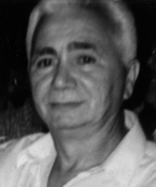

Descendente de tradicional família de Porto Nacional, Jurimar Pereira de Macedo foi prefeito de Porto Nacional de 1977 a 1982. Seu mandato foi marcado por importantes obras, como a construção do Cemitério São Pedro, a ponte de cimento ligando a cidade aos bairros da margem direita do Ribeirão São João, além da ampliação de postos de saúde e pavimentação de vias. Durante sua gestão, foram instalados o serviço de telefonia interurbana e a TV da Organização Jaime Câmara, contribuindo para o desenvolvimento local.
